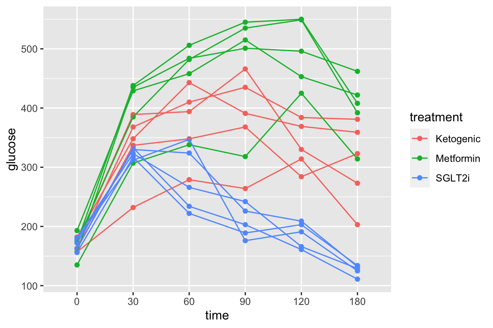
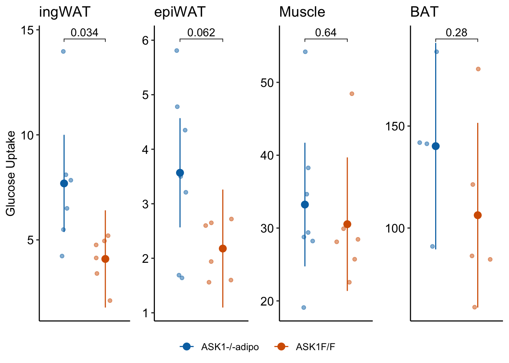

Chapter 2 Data – Reading, Wrangling, and Writing
Importing data into R can be a struggle for new R users and, unfortunately, most online “how to import” sources give easy but superficial methods that don’t follow best practices for increasing reproducibility or do not allow flexible organization of files within a project. Go straight to (Working in R)[data-working-in-r] if you just want to learn the method used to import files in this text and don’t care about important background information.
Some examples:
df <- read.table(file="clipboard")imports data copied to the clipboard, from an Excel/Sheets file or from an open text file. For this to be semi-reproducible, a comment specifying the filename, worksheet and range that was copied is necessary. More problematic (catastrophically so for reproducibility), is, how does a researcher know that they highlighted and copied the correct range in the Excel sheet?df <- read.csv(file.choose())opens the familiar “open file” dialog box, which lets the user navigate to the file of choice. For this to be semi-reproducible, a comment specifying the filename to import is necessary. The catastrophic problem (for reproducibility) is, how does a researcher know which file was actually opened during an R session? The researcher might think they opened “walker_maine_bee_data_clean_androscoggin.csv” but mistakenly opened “walker_maine_bee_data_clean_aroostook.csv”.df <- read.table(file="my_data.txt")anddf <- read_excel(file="my_data.xlsx")are reproducible because the filename is explicitly specified. But, this method requires that “my_data” is physically located in the same folder as the file containing the R script (the notebook .Rmd file in our case) and this violates the best practice of clean project organization with different folders for the different kinds of files (data, R scripts, images, manuscript text, etc.).- R Studio has an elegant import tool in the environment pane that opens a custom dialog box that allows the researcher to navigate to the file, and to specify what part of the file to import, such as the specific sheet and range for an Excel file. This has the same reproducibility issues as #1 and #2 but R Studio includes the equivalent script, which adds all relevant information for reproducility. One then simply copies and pastes this script into a code chunk and voila! The next time the script is run, the data can be imported from the script without using menus and dialog boxes. Except that..the script does not seem to take into account that the working directory of an R Markdown file is not the project folder but the folder containing the R Markdown file and so this two-step method fails. More personally, I’d prefer to run a chunk that quickly opens the data file instead of re-navigating through my file system and re-specifying the sheet and range every time I re-start the project in a new R session.
There are at least three solutions to the issues raised above, all requiring some understanding of file paths and directory structure in an operating system. A file such as “my_data.xlsx” has an absolute file path, which is the full address of the file (the filename is something like your house street number). The absolute file path of “my_data.xlsx” might be “/Users/jwalker/Documents/applied-biostatistics/data/my_data.xlsx”. A relative file path is the file path from the working directory. In an R Studio project, the working directory is the project directory, which is the directory containing the .Rproj file. This will be the working directory of the console. Importantly, the working directory of an R Markdown code chunk is the folder containing the saved R Markdown file. An R Studio Notebook is an R Markdown file so the working directory of a notebook code chunk is the folder containing the saved notebook file. If a notebook file is located within the notebooks folder, which is located within the project folder, then the relative file path to “my_file.xlsx” is “../data/my_file.xlsx”. The “..” tells the file OS to move “up” into the parent directory (which is the project folder) and the “data” tells the file OS to move “down” into the data folder. These are put together into a single address using “/”. The beauty of relative paths is that they remain the same – and so do not break one’s script – if the project folder, and all of its contents including the data folder and the notebooks folder, is moved to another location on the hard drive (say into a new “Research” folder). By contrast, the absolute file path changes, which breaks any old script.
The three solutions are
- Create a relative path to the file using something like
file_path <- "../data/my_data.xlsx". This should always work but it fails on some computers. For example, if the project folder is on a Windows OS (but not Mac OS) desktop, the assigned relative address doesn’t seem to look in the folder containing the file. - Create a setup chunk that reroutes the working directory to the project folder using the script
# use this in a chuck called "setup" to force the working directory to be
# at the level of the project file.
knitr::opts_knit$set(root.dir = rprojroot::find_rstudio_root_file())For this to work, the chunk has to be named “setup”, that is, the text inside the curly brackets at the top of the chunk should be “r setup”. Then, with this chunk, the relative file path is file_path <- "../data/my_data.xlsx" if “my_data.xlsx” is immediately inside the data folder which is immediately inside the project folder. This should work on any machine, and should work even if a project folder is moved.
- Use the function here(). The most robust solution seems to be using the function here() from the here package. The function works something like this
data_folder <- "data" # path to data that are imported
file_name <- "my_data.xlsx"
file_path <- here(data_folder, file_name) # paste together parts of the address
my_file <- read_excel(file = file_path)here() creates an absolute path, but one that is created on the fly, and will change (or should change) correctly if the project folder is moved on the same machine or to another machine.
2.1 Learning from this chapter
It will be easiest to learn from this chapter by starting with a clean notebook for the chapter. Create a new notebook and save it to the “notebooks” folder of your “applied biostats” project. Important: import/export scripts will not work properly until the file is saved! Get in the habit of creating the file, saving it immediately, and saving it often.
- Delete everything after the YAML header (this is the section at the top bounded by the “—”.
- Create a setup chunk that loads packages and creates variables for the locations of reading, writing, and image folders.
# import and wrangling packages
library(here) # here() creates the absolute path to the file
library(janitor) # clean_names to clean col labels of imported data
library(readxl) # import excel
library(data.table) # use data.table for wrangling
# analysis packages
library(emmeans) # get estimated marginal means and CIs, used for plot
# plotting packages
library(ggplot2) # ggplot environment
library(ggpubr) # publication ready plots
here <- here::here # make sure ``here` uses `here::here`
# relative paths to project folders
data_folder <- "data" # path to data that are imported
output_folder <- "output" # path to data that are saved
image_folder <- "images"Note on the script above
1. Be kind to the future you by loading only the packages necessary for the code in the R Markdown file that you are working on. If your default is to load everything, the future you will be confused why something was installed.
2. Be kind to the future you by commenting on why a package is loaded; usually this is a specific function from the package
3. here <- here::here is my favorite script ever. What is it doing? One can read this as “assign the function here from the here package to the object here” (this is reading the script right to left). Why do this? It turns out the multiple packages define a function called “here”. If any of these packages are loaded after the here package, then here from here won’t work – it will be replaced by here from the more recently loaded package. To make sure that here uses the function from the here package, I simply reassign here from the here package to the object “here” after loading in all packages.
2.2 Working in R
2.2.1 Importing data
2.2.1.1 Excel file
The Excel dataset is from an experiment on the growth response of zebra finch chicks to an incubation call that presumably signals “hot environment” to the embryos (Mariette, M.M. and Buchanan, K.L., 2016. Prenatal acoustic communication programs offspring for high posthatching temperatures in a songbird. Science, 353(6301), pp.812-814). The source file is from the Dryad Repository here:
file name: “allDatasetsMarietteBuchanan2016.xls”
source: https://datadryad.org//handle/10255/dryad.122315
Steps
- Copy the title of the article, which is “Prenatal acoustic communication programs offspring for high post-hatching temperatures in a songbird”
- Create a new folder within the “data” folder. Name the folder the title of the paper by pasting the name from the clipboard. This is the “data from” folder, since it contains the data from the publication with the title of the folder.
- Download the .xls file into this folder
A .xls file is an old (pre 2007) Microsoft Excel file type. It is a binary file and can only be opened into a readable format with software that knows how to translate the proprietary format. The more modern Excel file type is .xlsx, which contains within it multiple xml components. An xml file is a text file, and so contains readable content, but the content is xml code to display something. In general, I am a big advocate of archiving stuff as text files (manuscripts, data, scripts, blog posts) because these will always be readable by future software. Microsoft Excel is not likely to die anytime soon and software that can read .xls and especially .xlsx files (again, .xlsx files are text files) is even less likely to disappear but we can feel even more confident if data are archived as text files. That said, a single microsoft excel file with multiple sheets is an efficient method for distributing data and the readxl package provides excellent tools for reading different sheets of a single .xls or .xlsx file.
The code below uses the function read_excel() from the package readxl. More about the amazing power of this package is the tidyverse page and chapter 11 in the R for Data Science book.
folder <- "Prenatal acoustic communication programs offspring for high post-hatching temperatures in a songbird"
fn <- "allDatasetsMarietteBuchanan2016.xls"
file_path <- here(data_folder, folder, fn)
chick <- read_excel(file_path,
sheet = "nestlingMass") %>% # import
clean_names() %>% # clean the column names
data.table() # convert to data.tableThis text will consistently uses this protocol for storing and retrieving downloaded files. The first three lines in the script above creates the directory path to the file. This path includes three variables
data_folder– assigned to “data” in the setup chunk. “data” is a folder within the project folder that contains (or will contain) all datasets for this text. The data come from many different published papers, so the data for each publication gets its own folder within “data”.folder– the name of the “data from” folder within “data” containing the data files. In this text, these folder names will always be the name of the published paper.filename– the name of the file to read. There may be multiple data files within the publication’s data folder.
These are all put together into the absolute path using the function here() from the here package. Take a look at the value of file_path to confirm.
The last four lines (starting with chick <-) contains three functions that are piped together using the pipe operator %>%. These functions
- read the specified data from the specified file and assign this to
chick - clean the column names of the data.frame
- convert the data.frame to a data.table.
There are multiple ways to do this exactly this, including
A copy of the code above, which uses pipes
chick <- read_excel(file_path,
sheet = "nestlingMass") %>% # import
clean_names() %>% # clean the column names
data.table() # convert to data.tableVery similar to the code above but without pipes. This requires complete assignment statements (meh <- blah). This is easy to read but the pipes (above) use slightly less type and indent the post-import-processing steps and so the pipes make the script a wee bit more organized.
chick <- read_excel(file_path,
sheet = "nestlingMass")# import
chick <- clean_names(chick) # clean the column names
chick <- data.table(chick) # convert to data.tableThe script above that simply embeds each function. To read this, you have to start deep and then move out. This is easy enough for this statement if you are used to reading this kinda stuff. But nests of embedded functions can quickly become hard to read and the future you will be happy if you don’t do this. I sometimes will nest a single function in another but I’m trying to switch my default to pipes.
chick <- data.table(clean_names(read_excel(file_path,
sheet = "nestlingMass"))) # convert to data.table2.2.1.1.1 The read_excel function
read_excel is a beautifully flexible function because Excel. Data can be in different sheets and there can be different datasets within a single sheet. And, researchers tend to use Excel like a blackboard in that an Excel sheet often contains calculations such as means, standard deviations and t-tests. When using read_excel it is important to send the function enough information to read the correct data. For the chick data, if we simply used
without specifying the sheet, read_excel defaults to reading the first sheet (“OccurrenceIncubationCall”), which is not what we wanted. We can specify the exact range to important using the range = argument
chick <- read_excel(file_path,
sheet = "nestlingMass",
range = "A1:Q131") %>% # import
clean_names() %>% # clean the column names
data.table() # convert to data.tableThis isn’t necessary for these data because the “nestlingMass” sheet contains only a matrix of data and not extraneous information and the read_excel function is smart enough to figure this out. For many of the data sets in wet bench experimental biology, the range argument will be crucial.
2.2.1.1.2 View the imported data.table to check that the file was imported correctly and to learn about the contents.
Insert the following after your import script and run:
The line View(chick) script opens a new tab containing a spreadsheet-like display of the data.table chick.
Okay, let’s back up to understand why we post-process with clean_names. Re-import the data but without this function. I’ve done this by simply commenting out the line. The pipe above then skips over this and goes to data.table().
chick <- read_excel(file_path,
sheet="nestlingMass") %>% # import
# clean_names() %>% # clean the column names
data.table() # convert to data.tableYou can see the column names of chick using View but I find it easier to look at these names using names or colnames (yes, there are elebenty million ways to do anything in R) (names is very general in that it can be used to return the names of the parts of any list, while colnames is specific to matrix-like objects)
## [1] "chick ID" "brood ID"
## [3] "brood composition" "sex"
## [5] "rank in nest" "playback treatment"
## [7] "nest temperature above ambient" "max daily temp hatch day"
## [9] "mean max temp hatch to day2" "mean max temp hatch to day10"
## [11] "mean max temp hatch to day13" "hatching mass"
## [13] "day1 mass" "day2 mass"
## [15] "day10 mass" "day13 mass"
## [17] "day13 tarsus"In general, it is bad practice to include spaces, parentheses, and special characters such as -, $ or ^, in the column names of a data frame because these increase handling costs later on. The best practice is to replace a blank with an underscore, for example rank_in_nest. Some coders separate words with a period (rank.in.nest). Others mash words together into a single word like this rankinnest but this should generally be avoided because the result can be hard to read. Finally, some coders use Caps to separate words like this RankInNest. This is easier to read than simple concatenation but the underscore is the easiest to read.
The clean_names from the janitor package is a beautiful function to clean the column names of a data frame including replacing spaces with an underscore and stripping parentheses. The default clean includes changing any uppercase letter to lower case. Many coders like to work with all lowercase variable names to avoid having to hit the shift key. I am one of these.
Worst Practices – resist the temptation to change the column names in the data file, which reduces reproducibility. Leave original data files original. Always increase reproducibility!
colleague blues – Most researchers live in an Excel world and save data in a way that is efficient for computing stuff in Excel but not efficient for statistical analysis using R or other statistical computing software packages (with the exception of Graphpad Prism). Analyzing data will be much less frustrating if the data are saved in a format that facilitates analysis. Best practices for creating data files
https://www.youtube.com/watch?time_continue=309&v=Ry2xjTBtNFE – An excellent video introduction to best practices for organizing data in a spreadsheet that will subsequently be analyzed by statistics software.
Broman, K. W., & Woo, K. H. (2017). Data organization in spreadsheets (No. e3183v1). https://doi.org/10.7287/peerj.preprints.3183v1 – An excelllent review of best practices for organizing data in a spreadsheet.
beginner blues – after running the code with the clean_names commented out, type this into the console chick <- clean_names(chick). Now if you look at the column names with names(chick), you see the names have been cleaned. But, if you quit R Studio, then re-open the notebook and run the chunks, your column names will not be clean because your command to clean the names was not in the saved script but simply entered into the console. The memory of this change was lost when you quit R Studio. This is a very common beginner mistake – make changes with scripts in the console that aren’t preserved in the saved chunks in the notbook. I’m not advising against changing the values of objects in the console – I do this frequently when debugging or to experiment – but to simply be aware that if you want specific operations to be reproducible, they need to be in the saved chunks in your notebook file.
Delete the comment and re-run the chunk so that chick has clean names. Save the file!
2.2.1.1.3 Explore with plots
Did I mention to delete the comment in front of clean_names and re-run the chunk so that chick has clean names?
Just for fun, let’s plot the data and reproduce something close to Fig. 2A and B. We are using the qplot function, which is from the ggplot2 package. qplots are quick plots – something you want to do to quickly look at data but don’t want to turn into a publication quality plot.
qplot(x = nest_temperature_above_ambient,
y = day13_mass,
data = chick[playback_treatment == "treat"]) +
geom_smooth(method = "lm")## `geom_smooth()` using formula 'y ~ x'
qplot(x = nest_temperature_above_ambient,
y = day13_mass,
data = chick[playback_treatment == "cont"]) +
geom_smooth(method = "lm")## `geom_smooth()` using formula 'y ~ x'Notes on the code to make these plots
- the names of the columns to use as the x and y axes were not embedded into quotes (e.g. “nest_temperature_above_ambient”). Sometimes a column name has to be in quotes and sometimes not. In general, if the column name is sent to the function as a list (even if its a list with a single item), the names need to be in quotes. Regardless, remember this when you are debugging.
- The first plot includes only the subset of data in which the value of
playback_treatmentis “treat”. Similarly, the second plot includes only the subset of data in which the value ofplayback_treatmentis “cont”. I have sent a subset of the data to the plot function. There are elebenty million ways to subset data in R, I have done it the “data.table way”. - each argument in the qplot function is on a separate line (created by adding a return after the comma) and the
geom_smoothfunction is on a new line. This just makes the function more readable then not doing this. What do you think?
qplot(x = nest_temperature_above_ambient, y = day13_mass, data = chick[playback_treatment == "treat"]) + geom_smooth(method = "lm")- I have included the name of each argument. This isn’t necessary but it makes the function more readable and avoids potential bugs. The arguments without the argument names looks like this
2.2.1.2 Text file
The example dataset comes from an experiment on the effect of neonicotinoid pesticides on bumble bee colony growth.
file name: “Whitehorn, O’Connor, Wackers, Goulson (2012) Data from ‘Neonicotinoid pesticide reduces bumblebee colony growth and queen production’.csv.csv”
source: https://datadryad.org//resource/doi:10.5061/dryad.1805c973
Steps
- Copy the title of the paper title, which is “Neonicotinoid pesticide reduces bumblebee colony growth and queen production”
- Create a new folder within “data”. Name the folder the title of the paper by pasting from the clipboard. This is the “data from” folder, since it contains the data from the publication with the title of the folder.
- Download the .csv file into this folder
A .csv file is a text file that is comma-delimted, which means that the entries of a row are separated by commas. A text file is readable by any text editor software and most other kinds of software. Datasets that are stored as text files are typically saved as either .csv (where the entries of a row are separated by commas) or .txt (where the entries are separated by tabs). The base R way to read a .csv file is using read.csv. The read.table function is more versatile, as the delimiter can be specified. The function fread() from the data.table package is fast, smart, and flexible. It is smart in the sense that it guesses what the delimter is. Unfortunately, because of spaces in the column labels for this file, fread guesses incorrectly (another reason why spaces in column labels should be avoided). To overcome this, the statement below specifies that the file contains a “header” (a line containing column labels)
folder <- "Neonicotinoid pesticide reduces bumblebee colony growth and queen production"
filename <- "Whitehorn, O'Connor, Wackers, Goulson (2012) Data from 'Neonicotinoid pesticide reduces bumblebee colony growth and queen production'.csv.csv"
file_path <- here(data_folder, folder, filename)
bee <- fread(file_path, header=TRUE) %>%
clean_names()Here, as with the import of the Excel file, the first three lines create the directory path to the file. There is no need to pipe bee to data.table() because fread automatically importants the data as a data.table. It does not need to be converted.
Here is a reproduction of Fig 2 from the journal article.
bee[, treatment:=factor(treatment, c("Control", "Low", "High"))] # reorder factor levels
ggbarplot(data=bee, x="treatment", y="new_queens", add = "mean_se")
2.2.1.3 Troubleshooting file import
If you get an error that starts with “Error: path does not exist:” then R is not “seeing” your specified file given the path you’ve given it.
- Make sure you loaded the package
herein a “setup” chunk and that you have run the chunk - Make sure you have assigned
data_folder <- "data"in the setup chunk and have run the chunk. - Make sure your “data” folder is one level inside your project folder. “one level” means it is not buried deeper inside other folders within the project folder.
- Make sure your “data from” folder (the folder with the title of the publication) is one level inside your “data” folder
- Make sure your data file is one level inside the correct “data from” folder.
- Bug alert Make sure you have the name of the “data from …” folder correct in your script. Do not type the name of the folder. Instead, go to the finder and highlight the folder containing the data file, copy the name, return to the R markdown script, type
folder <- ""and then paste the clipboard (the name of the folder) in between the quote marks. - Bug alert Make sure the file name is correct in the script. As with the folder name, I go to the finder and copy the file name and paste it in place. In Windows use ctrl-a instead of ctrl-c to copy the full filename including the extension.
More generally, Humans are very good at understanding misspelled and OdDLy capitalized words but the R language (or any computer language) is very literal. R is case sensitive (some programming languages are not). “Prenatal acoustic communication”, “Prenatal Acoustic Communication”, and “prenatal acoustic communication” are all different values. Spelling AND capitalization have to be perfect, not simply close. Spelling includes spaces. A frequent bug is a file name typed as “Prenatal acoustic communication” when the actual name is “Prenatal acoustic communication”. Can you spot the bug? The original (what we need to copy) has two spaces between “acoustic” and “communication” while the incorrect copy has only one.
Spelling bugs are avoided by simply copying and pasting names of folders, names of files, column names of data frames, and level names of factors, which leads to a general rule of R scripting…
2.2.1.4 Rule number one in R scripting {# rule1}
Always copy and paste any text that will be inserted into quotes
Do not try to type it out. You have been warned.
2.3 Data wrangling
Data archived in Excel spreadsheets, at least in wet-bench experimental biology projects, are generally not in a format this is readily analyzed in R, or any statistical software other than perhaps Graphpad Prism. Use these examples as templates for how to import and wrangle Excel-archived data in your project.
2.3.1 Reshaping data – Wide to long
2.3.1.1 Wide to long – Adipsin data

Fig. 1h of the Adipsin paper presents three bar plots, each comparing a response variable between the control (GFP) and treated (Adipsin) groups. A screenshot of the Excel-archived data is shown above. The data are in wide format. In wide-format, the values of a variable are in separate columns for each treatment level (group). This is seen in the screenshot of the data. In the data for the first panel of Fig. 1h (Total C3), the values for the GFP group are in Column A and the values for the Adipsin group are in Column B. Wide format is efficient for computations in a spreadsheet, such as computing means and standard deviations of columns of data, and for plotting.
For most statistical analyses of experimental data in R (and most statistics software), all values of a single variable should be in a single column. This is called long format. I’ve rearranged the data from the archived spread sheet into long format by stacking each group’s values into a single column, shown in the screen capture below. All values of total C3 are in a single column, as are the values for the other variables. In long format, there needs to be a way to identify which values belong to which group and this is achieved with column “treatment”. In adition to the treatment column, I created a column containing the mouse identification number (I made these up as they were not given in the Excel-archived data).
The difference between wide and long also reflects how we think about statistical analysis. When we do a t-test to compare the means of total C3 between GFP and Adipsin groups, we might think we have two things: the set of C3 values for the GFP group and the set of C3 values for the Adipsin group. When we fit a linear model, we also have two things, the variable treatment containing treatment level assignment and the variable c3 containing the C3 values. In wide format, there is nothing to suggest that treatment is a variable.
There are many functions to tidy data from wide to long. melt from the data.table package is especially useful. It is data.table’s version of melt from the reshape2 package.
The major arguments of data.table::melt are
melt(data, id.vars, measure.vars, variable.name, value.name)
melt takes the data in the columns listed in measure.vars and stacks these into a single column named value.name. The names of the columns in measure.vars are the values of the elements in a new column named variable.name. The elements of any column in id.vars are repeated p times, where p is the number of columns that were stacked.
Let’s melt the three different response variables of the adipsin data and merge them into a single data.table. There are several ways to combine data sets including merge and cbind. We’ll compare these later.
file_folder <- "Adipsin preserves beta cells in diabetic mice and associates with protection from type 2 diabetes in humans"
fn <- "41591_2019_610_MOESM3_ESM.xlsx"
file_path <- here(data_folder, file_folder, fn)
treatment_levels <- c("GFP", "Adipsin")
# separately read each treatment
fig1h_total <- read_excel(file_path,
sheet = "Figure 1h",
range = "A3:B7") %>%
data.table() %>%
melt(measure.vars = treatment_levels,
variable.name = "treatment",
value.name = "total_c3")
# give each mouse a unique ID
fig1h_total[, mouse_id := 1:.N]
fig1h_ratio <- read_excel(file_path,
sheet = "Figure 1h",
range = "A11:B15") %>%
data.table() %>%
melt(measure.vars = treatment_levels,
variable.name = "treatment",
value.name = "ratio")
# give each mouse a unique ID
fig1h_ratio[, mouse_id := 1:.N]
fig1h_c3a <- read_excel(file_path,
sheet = "Figure 1h",
range = "A18:B22") %>%
data.table() %>%
melt(measure.vars = treatment_levels,
variable.name = "treatment",
value.name = "c3a")
# give each mouse a unique ID
fig1h_c3a[, mouse_id := 1:.N]
fig1h <- merge(fig1h_total, fig1h_c3a,
by = c("treatment", "mouse_id"))
fig1h <- merge(fig1h, fig1h_ratio,
by = c("treatment", "mouse_id"))
fig1h[, check_ratio := c3a/total_c3]
# View(fig1h) # uncomment to view2.3.1.2 Wide to long – Enteric nervous system data
Article: Rolig, A. S., Mittge, E. K., Ganz, J., Troll, J. V., Melancon, E., Wiles, T. J., … Guillemin, K. (2017). The enteric nervous system promotes intestinal health by constraining microbiota composition. PLOS Biology, 15(2), e2000689. https://doi.org/10.1371/journal.pbio.2000689
Data source https://doi.org/10.1371/journal.pbio.2000689.s008
file name: “journal.pbio.2000689.s008.xlsx”
Let’s import and reshape the data for figure 2d. Look at the excel file and the data in Fig. 2d. There is a single treament with four levels, but the authors have organized the data in each level in separate columns and used the column header as the level name.

Let’s melt the data from wide to long by stacking the four columns into a single column “neutrophil_count” and adding a treatment column identifying the group.
folder <- "The enteric nervous system promotes intestinal health by constraining microbiota composition"
filename <- "journal.pbio.2000689.s008.xlsx"
file_path <- here(data_folder, folder, filename)
# figure 2D data
sheet_i <- "Figure 2"
range_i <- "F2:I24"
fig_2d_wide <- read_excel(file_path, sheet=sheet_i, range=range_i) %>%
clean_names() %>%
data.table()
# change column names by replacing without "_donor" in each name
# these new column names will become the levels of the treatment factor
new_colnames <- c("gf", "wt", "sox10", "iap_mo")
setnames(fig_2d_wide, old=colnames(fig_2d_wide), new=new_colnames)
# wide to long
fig_2d <- melt(fig_2d_wide,
measure.vars=colnames(fig_2d_wide),
variable.name="treatment",
value.name="neutrophil_count")
# omit empty rows
fig_2d <- na.omit(fig_2d)
# re-order factors
fig_2d[, treatment := factor(treatment,
levels = c("wt", "gf", "sox10", "iap_mo"))]
# View(fig_2d)To learn (instead of just copy and modify), it’s best to do this in steps and not run the whole chunk. At each step, look at the result using View. The script above includes three extra wrangling steps.
Changing column names in fig_2d_wide. The column names in wide format will become the treatment level names of the treatment factor after reshaping. It will be easier down the road if these names are shorter and the "_donor" in each name is redundant. The
setnamesfunction renames the column names.For these data, the number of measures within the different treatments differs and, as a consequence, there are multiple cells with
NAwhich indicates a missing value.View(fig_2d_wide)(this can be typed in the console) to see this. After reshaping to long format (fig_2d), the rows with missing values become empty rows – there is no useful information in them (View this). To see this, re-run the lines of the chunk up to the line “# omit empty rows”. Thena.omitfunction deletes any row with missing values. Here, this deletes these information-less rows. Be very careful withna.omit. You do not want to delete rows of data that contain information you want.For both analysis and plots, we want to compare values to the control level, which is named “wt” for the fig_2d data. That is, we want “wt” to be the reference level. To achieve this, the levels of the factor treatment need to be re-ordered using the
levelsargument. (note, I typically do not add “levels =”, but simply pass the list of levels)
2.3.1.3 Wide to long – bee data
The example above is pretty easy, because the all columns in the original data frame are melted (stacked). Here is an example in which only a subset of columns are stacked. In addition, only a subset of the remaining columns are retained in the long format data frame. The data are from Panel A of supplement Fig. 8 (https://journals.plos.org/plosbiology/article/file?type=supplementary&id=info:doi/10.1371/journal.pbio.2003467.s019) from
Kešnerová, L., Mars, R.A., Ellegaard, K.M., Troilo, M., Sauer, U. and Engel, P., 2017. Disentangling metabolic functions of bacteria in the honey bee gut. PLoS biology, 15(12), p.e2003467.
**data source*:** https://doi.org/10.1371/journal.pbio.2003467.s001
folder <- "Data from Disentangling metabolic functions of bacteria in the honey bee gut"
filename <- "journal.pbio.2003467.s001.xlsx"
# figure 2D data
sheet_i <- "S8 Fig"
range_i <- "A2:H12"
file_path <- here(data_folder, folder, filename)
fig_s8a_wide <- read_excel(file_path,
sheet=sheet_i,
range=range_i) %>%
clean_names() %>%
data.table()
# wide to long
stack_cols <- paste0("replicate", 1:5)
fig_s8a <- melt(fig_s8a_wide,
id.vars = c("media", "time_h"),
measure.vars = stack_cols,
variable.name = "Replicate",
value.name = "OD600") # measure of absorbance at 600nm2.3.1.4 Wide to long – stacking multiple sets of columns
This example comes from my lab, where a student measured sprint speed in each fish three times prior to treatment and three times following treatment. The wide format data looked something like this
set.seed(1)
fd_wide <- data.table(fish_ID=paste0("fish",1:4),
treatment=rep(c("cn", "tr"), each=2),
length=rnorm(4, 12, 2),
pre_1=rnorm(4, 50, 5),
pre_2=rnorm(4, 50, 5),
pre_3=rnorm(4, 50, 5),
post_1=rnorm(4, 50, 5),
post_2=rnorm(4, 50, 5),
post_3=rnorm(4, 50, 5)
)
knitr::kable(fd_wide, digits=1)| fish_ID | treatment | length | pre_1 | pre_2 | pre_3 | post_1 | post_2 | post_3 |
|---|---|---|---|---|---|---|---|---|
| fish1 | cn | 10.7 | 51.6 | 52.9 | 46.9 | 49.9 | 54.6 | 53.1 |
| fish2 | cn | 12.4 | 45.9 | 48.5 | 38.9 | 54.7 | 53.9 | 49.7 |
| fish3 | tr | 10.3 | 52.4 | 57.6 | 55.6 | 54.1 | 50.4 | 49.2 |
| fish4 | tr | 15.2 | 53.7 | 51.9 | 49.8 | 53.0 | 40.1 | 42.6 |
To analyze the response (post-treatment sprint) adjusted for pre-treatment sprint, the three pre-treatment sprint measures need to be stacked into a single column and the three post-treatment measures need to be stacked into a single column. This is easy using melt from the data.table package.
pre_cols <- paste("pre", 1:3, sep="_")
post_cols <- paste("post", 1:3, sep="_")
fd <- melt(fd_wide,
id.vars=c("fish_ID", "treatment", "length"),
measure.vars=list(pre_cols, post_cols),
variable.name="Order",
value.name=c("sprint_pre", "sprint_post"))
knitr::kable(fd, digits=1)| fish_ID | treatment | length | Order | sprint_pre | sprint_post |
|---|---|---|---|---|---|
| fish1 | cn | 10.7 | 1 | 51.6 | 49.9 |
| fish2 | cn | 12.4 | 1 | 45.9 | 54.7 |
| fish3 | tr | 10.3 | 1 | 52.4 | 54.1 |
| fish4 | tr | 15.2 | 1 | 53.7 | 53.0 |
| fish1 | cn | 10.7 | 2 | 52.9 | 54.6 |
| fish2 | cn | 12.4 | 2 | 48.5 | 53.9 |
| fish3 | tr | 10.3 | 2 | 57.6 | 50.4 |
| fish4 | tr | 15.2 | 2 | 51.9 | 40.1 |
| fish1 | cn | 10.7 | 3 | 46.9 | 53.1 |
| fish2 | cn | 12.4 | 3 | 38.9 | 49.7 |
| fish3 | tr | 10.3 | 3 | 55.6 | 49.2 |
| fish4 | tr | 15.2 | 3 | 49.8 | 42.6 |
2.3.2 Reshaping data – Transpose (turning the columns into rows)
2.3.2.1 Transpose – PI3K inhibitors data
Source: Suppression of insulin feedback enhances the efficacy of PI3K inhibitors
Figure 3A of this publication is a plot of blood glucose level taken on the same individual mice from four treatment groups over six time periods. Data on a single variable such as blood glucose, taken on the same individual at multiple time points, are known as longitudial data but are often mistakenly called repeated measures data. There are mulitple ways to analyze longitudinal data, some goood, some less good. There are two reasonable ways to archive longitudinal data for analysis in R. The Excel-archived data for Figure 3A is neither. A screen capture of two of the four treatment groups is shown below.

In the archived data the individual mice are in columns. The measure at each time point is in rows. And the treatment group is in blocks. Typical data for analysis in R should have the individual mice in rows and each variable in columns (an exception in experimental biology is omics data, such as RNA expression levels. Many packages with functions to analyze these data have the genes on each row and the individual on each column). The Figure 3A data are turned on its side. We need to transpose the data, or rotate the matrix 90 degrees (make the columns rows and the rows columns) to turn the data into wide format. From this we can create a new data.table with the data in long format.
folder <- "Suppression of insulin feedback enhances the efficacy of PI3K inhibitors"
filename <- "41586_2018_343_MOESM6_ESM.xlsx"
file_path <- here(data_folder, folder, filename)
pi3k_side <- read_excel(file_path,
sheet = "Figure 3A (Blood Glucose)",
range = "A2:U7",
col_names = FALSE) %>%
data.table()## New names:
## * `` -> ...1
## * `` -> ...2
## * `` -> ...3
## * `` -> ...4
## * `` -> ...5
## * ...# give columns names as the treatment of each mouse
# verify n=5 per group
treatment_levels <- c("Chow", "Ketogenic", "Metformin", "SGLT2i")
colnames(pi3k_side) <- c("time",
rep(treatment_levels, each = 5))
# transpose
# keep colnames in "side" as values of treatment col in "wide"
# make values of "time" in "side" the colnames in "wide"
pi3k_wide <- transpose(pi3k_side,
keep.names = "treatment",
make.names = "time")
# make a baseline column
pi3k_wide[, glucose_0 := get("0")]
# make-up a mouse id for each mouse
pi3k_wide[, id := paste(treatment, 1:.N, sep = "_"), by = treatment]
# make treatement a factor with "chow" as reference
pi3k_wide[, treatment := factor(treatment, treatment_levels)]
# make a long version
pi3k_long <- melt(pi3k_wide,
id.vars = c("treatment", "id", "glucose_0"),
variable.name = "time",
value.name = "glucose")Notes
- Read the comments on the usage of the
keep.namesandmake.namesarguments oftranspose. These are powerful. - pi3k_wide has column names that are times (in minutes). This presents wrangling problems (column names shouldn’t be numbers. Here it is useful to create the long format data.table with a time column of numbers). For example, the code above creates copies the column “0” into a new column “glucose_0” using
glucose_0 := get("0"). Had the code beenglucose_0 := "0", all values would be the character “0”. Had the code beenglucose_0 := 0, all values would be the number 0.getlooks for the column with the name of whatever is inside the parentheses.
Let’s do a quick plot to examine the data
2.3.3 Combining data
Source article Bak, A.M., Vendelbo, M.H., Christensen, B., Viggers, R., Bibby, B.M., Rungby, J., Jørgensen, J.O.L., Møller, N. and Jessen, N., 2018. Prolonged fasting-induced metabolic signatures in human skeletal muscle of lean and obese men. PloS one, 13(9), p.e0200817.
Data source https://datadryad.org/stash/dataset/doi:10.5061/dryad.6121hj7
file name: datafiles.xlsx
The data are from a randomized crossover design where 18 men (9 lean and 9 obese) were measured for multiple metabolic markers at two times: 1) in a post-absorptive state after 12 hours overnight fast, and 2) in a prolonged fasting state after 72 hours of fasting. In addition, at each time point, metabolic markers were measured prior to and after an insulin infusion. Here, we want to reproduce values in Table 2, which are measures of mean blood insulin and metabolite levels after 12 hours and 72 hours fasting in both the lean and obese groups.
A difficulty for the analyst is that the response data are in the “Table 2” sheet but the variable containing the assignment to “lean” or “obese” group is in the “Table 1” sheet. To analyze these response, the two datasets need to be combined into a single data frame. The important consideration when combining data is that like is matched with like. For the fasting dataset, “like” is the subject id, and we have some data for each subject id in Table 1 and other data for the same subject ids in Table 2. This means that we essentially want to glue the columns of table 2 to the columns of table 1 in a way that insures that the correct data for each subject id is on the same row. This is a bit more complicated for these data because Table 1 contains 18 data rows, one for each subject id and Table 2 contains 36 data rows, 2 for each subject id, because each subject has data measured at 12 hours and at 72 hours.
2.3.4 Subsetting data
It is common to see researchers create multiple subsets of data for further processing. This practice should be be discouraged because the same variables will be in multiple data frames and it can be hard to keep track of any processing of variables in the different datasets. Instead, subset the data at the level of analysis.
There are many ways to subset data in R. Experienced users tend to divide up into those using base R, those using the tidyverse packages, or those using data.table. Learn one well. This book uses data.table. Before outlining usage in data.table, let’s back up a bit and review different indexing systems.
- In Excel, rows are specified (or “indexed”) by numbers and columns by letters. Every cell has an address, for example C2 is the cell in the 2nd row and 3rd column. Notice that in Excel, the column part of the address comes before the row part.
- In statistics, it is extremely common to use a system where \(x_{ij}\) is the value of the element in the ith row and jth column of the matrix X. Notice that in this notatin, the row index (i) comes before the column index (j).
- In programming languages, including R, it is extremely common to use a system where my_data[i, j] is the value of the element in the ith row and jth column of the matrix-like object named “my_data” (such as a data frame in R).
- data.table explicitly refers to the row index and column index as i and j.
2.3.4.1 Specifying a subset of rows (“observations” or “cases”)
A subset of rows is specified using either a list of row numbers or
In a data.table, a subset of rows is specified using either a list of row numbers or a combination of comparison operators (==, !=, >, <, >=, <=, %in%) and Boolean logic operators (&, |, ! – these are “and”, “or”, “not”) as i.
Let’s use the pi3k_long data from above to explore this. First, the plot of plasma glucose for all individuals in each treatment group across all time points.

pi3k_long[treatment == "Chow",]) is the subset of rows in which entries in the column “treatment” take the value “Chow” using the “is equal” (“==”) operator
qplot(x = time,
y = glucose,
data = pi3k_long[treatment == "Chow",],
color = treatment) +
geom_line(aes(group = id))
And the subset of rows in which entries in the column “treatment” take any value but “Chow” using the “not equal” operator (“!=”).
qplot(x = time,
y = glucose,
data = pi3k_long[treatment != "Chow",],
color = treatment) +
geom_line(aes(group = id))
The subset of rows in which entries in the column “treatment” take either the value “Chow” or the value “SGLT2i” by combining two “is equal” (“==”) operators using the OR (“|”) boolean operator
qplot(x = time,
y = glucose,
data = pi3k_long[treatment == "Chow" | treatment == "SGLT2i",],
color = treatment) +
geom_line(aes(group = id))
The subset of rows in which entries in the column “time” take either the value “30” or the value “60” using the “in a list” operator (%in%). The values in the “time” column look like integers but are actually treatment levels (which act like string or character variables).
qplot(x = time,
y = glucose,
data = pi3k_long[time %in% c("30", "60"),],
color = treatment) +
geom_line(aes(group = id))
The subset of rows in which entries in the column “time_c” are less than or equal to 60 using the “less than or equal to” operator AND the value in the treatment column is in the list (“Chow”, “SGLT2i”). The two comparisons are combined with the AND (“&”) Boolean operator.
pi3k_long[, time_c := as.numeric(as.character(time))]
qplot(x = time,
y = glucose,
data = pi3k_long[time_c <= 30 & treatment %in% c("Chow", "SGLT2i"),],
color = treatment) +
geom_line(aes(group = id))
The same result as above but using different operators. I would describe this as, the subset of rows in which entries in the column “time_c” are less than or equal to 60 using the “less than or equal to” operator AND the value in the treatment column is either “Chow” OR “SGLT2i”. The two comparisons are combined with the AND (“&”) Boolean operator. The order of operations is determined by the parentheses, as with all algebra.
pi3k_long[, time_c := as.numeric(as.character(time))]
qplot(x = time,
y = glucose,
data = pi3k_long[time_c <= 30 & (treatment == "Chow" | treatment == "SGLT2i"),],
color = treatment) +
geom_line(aes(group = id))
2.3.5 Wrangling columns
2.3.5.1 Creating new columns that are functions of values in existing columnes
2.3.5.2 Change the reference level of a factor
2.3.5.3 Converting a single column with all combinations of a 2 x 2 factorial experiment into two columns, each containing the two levels of a factor
Article source: Tauriello, D., Palomo-Ponce, S., Stork, D. et al. TGFβ drives immune evasion in genetically reconstituted colon cancer metastasis. Nature 554, 538–543 (2018) doi:10.1038/nature25492
Data source: https://www.nature.com/articles/nature25492#Sec23
filename: “41586_2018_BFnature25492_MOESM10_ESM.xlsx”
sheet: “Fig. 4h-tumours”
The analysis of the data in Fig. 4h specifies a single \(X\) variable “Treatment” with four levels (or groups): “Con”, “Gal”, “aPD-L1”, and “Gal+aPD-L1”. These levels indicate that the design is actually factorial with two factors, each with two levels. The first factor has levels “no Gal” and “Gal”. The second factor has levels “no aPD-L1”, “aPD-L1”. The single column Treatment “flattens” the 2 X 2 factorial design to a 4 x 1 design. In general, we would want to analyze an experiment like this as factorial model, because this allows us to make inferences about the interaction effect between the two factors. For these inferences, we need a standard error, or a confidence interval, or a p-value of the estimate, which we can easily get from the factorial model. In order to analyze the data with a factorial model, we need to create two new columns – one column is the factor variable containing the two levels of Gal and one column is the factor variable containing the two levels of aPD-L1.
gal_levels <- c("no Gal", "Gal")
tumor[, gal := ifelse(treatment == "Gal" | treatment == "Gal+aPD-L1",
gal_levels[2],
gal_levels[1])]
apd_levels <- c("no aPD-L1", "aPD-L1")
tumor[, apdl1 := ifelse(treatment == "aPD-L1" | treatment == "Gal+aPD-L1",
apd_levels[2],
apd_levels[1])]
# re-order factor levels
tumor[, gal:=factor(gal, gal_levels)]
tumor[, apdl1:=factor(apdl1, apd_levels)]A way to check the results to make sure that our conversion is correct is to compute the sampel size for the 2 x 2 combinations, but include the original treatment column in the by list.
## treatment gal apdl1 N
## 1: Con no Gal no aPD-L1 124
## 2: Gal Gal no aPD-L1 89
## 3: aPD-L1 no Gal aPD-L1 101
## 4: Gal+aPD-L1 Gal aPD-L1 58That looks good.
Bug alert If you break Rule #1, and type in the treatment level “Gal+aPD-L1” as “Gal + aPD-L1”, then you will get new columns containing junk.
## treatment gal apdl1 N
## 1: Con no Gal no aPD-L1 124
## 2: Gal Gal no aPD-L1 89
## 3: aPD-L1 no Gal aPD-L1 101
## 4: Gal+aPD-L1 no Gal no aPD-L1 58Remember Rule #1. Always copy and paste any text that will be inserted into quotes. This is easily done here by typing unique(tumor$treatment) into the console. This function returns the unique values of the column “treatment” of the data.table “tumor”.
unique(tumor$treatment) [1] “Con” “Gal” “aPD-L1” “Gal+aPD-L1”
Now, copy the name of a level and paste into your code. Repeat until done.
2.3.6 Missing data
Supplement Figure 1F of this paper shows weight as a function of age class and genotype for the whole body and 8 organs. There are some missing weights in the Excel-archived data. These missing data are designated with a minus “-” sign. To import these data in correctly, use the na = argument in the read_excel function.
file_folder <- "Deletion of Cdkn1b in ACI rats leads to increased proliferation and pregnancy-associated changes in the mammary gland due to perturbed systemic endocrine environment"
file_name <- "journal.pgen.1008002.s008.xlsx"
file_path <- here(data_folder, file_folder, file_name)
fig_s1f <- read_excel(file_path,
sheet = "all weights",
range = "A2:K57",
na = "-",
col_names = TRUE) %>%
clean_names() %>%
data.table()
fig_s1f[, genotype := factor(genotype, c("+/+", "-/-"))]
fig_s1f[, age_class := ifelse(age_at_sac_wks <= 6.0, "4-6", "8+")]
# View(fig_s1f)Notes
- In R, a value of “NA” represents missing.
- The default value for
na =is an empty (or blank) cell (not a space but a cell that is empty). na =accepts a list of strings, for examplena = c("", "-99", "--")that will all be read as na.
2.3.6.1 Handling missing data
2.3.6.1.1 Many base R functions used for summary measures require NA handling
## [1] NA## [1] 0.2489524## [1] NA## [1] 0.151694## [1] NA## [1] 10.456There are many ways to get the sample size for a particular variable. Be careful if using length() which counts NA as part of the vector of values.
2.3.6.1.2 The !is.na function is useful
## [1] 55## [1] 42Notes
!is.na(ovary)is taking the subset of rows of fig_s1f for which the value of “ovary” is not NA (!is.na is read “not is.na”)
This is especially useful if you are creating your own code uses counts. Here I create a table of means, standard error of the mean, and 95% CIs of the mean for each genotype group. But first, this script generates the wrong N for each group (since there are missing values), although the mean and SD are correct.
fig_s1f[, .(mean = mean(spleen, na.rm = TRUE),
n = .N,
sd = sd(spleen, na.rm = TRUE)),
by = genotype]## genotype mean n sd
## 1: -/- 0.5801333 21 0.13680480
## 2: +/+ 0.2956667 34 0.04460855To compute the correct n, which will be necessary for computing the SE and the CI, use !is.na
spleen_summary <- fig_s1f[!is.na(spleen), .(mean = mean(spleen),
n = .N,
sd = sd(spleen)),
by = genotype]
spleen_summary[, se := sd/sqrt(n)]
spleen_summary[, lower := mean + se*qt(.025, (n-1))]
spleen_summary[, upper := mean + se*qt(.975, (n-1))]
spleen_summary## genotype mean n sd se lower upper
## 1: -/- 0.5801333 15 0.13680480 0.03532285 0.5043734 0.6558933
## 2: +/+ 0.2956667 27 0.04460855 0.00858492 0.2780201 0.31331322.3.6.1.3 ggplot functions automatically handle missing values
with a useful warning.
## Warning: Removed 13 rows containing missing values (geom_point).
2.3.6.1.4 Regression model functions (lm, glm, gls, etc.) handle missing values by default
Missing data in regression model functions such as lm are handled using the argument na.action = and the default is “na.omit”, which omits any rows that contain a missing value in one or more of the model variables (it includes rows if these contain missing values only in the columns not included in the model). It’s as if the user took the subset of data including only the columns containing the model variables and then deleted any row with missing values.
Here is the coefficient table of the fit model object that did not explictly tell the lm function how to handle missing data.
## Estimate Std. Error t value Pr(>|t|)
## (Intercept) 0.04238009 0.0242993900 1.744081 8.902319e-02
## body_wt_g_sac 0.00167493 0.0001506493 11.118067 1.170042e-13
## genotype-/- 0.23760586 0.0147600545 16.097898 8.072069e-19Here is the coefficient table of the fit model object that did explicitly tell lm how to handle missing data, using the argument na.action = "na.exclude". These coefficient tables are the same.
m2 <- lm(spleen ~ body_wt_g_sac + genotype,
data = fig_s1f,
na.action = "na.exclude")
coef(summary(m2))## Estimate Std. Error t value Pr(>|t|)
## (Intercept) 0.04238009 0.0242993900 1.744081 8.902319e-02
## body_wt_g_sac 0.00167493 0.0001506493 11.118067 1.170042e-13
## genotype-/- 0.23760586 0.0147600545 16.097898 8.072069e-192.3.6.2 But…beware of fitted, predicted, or residual values from regression model functions unless you’ve explictly told the function how to handle missing values
Use na.action = "na.exclude" if you want to add the fitted (or predicted) values or residuals as new columns in the original data object (fig_sf1). Compare the length of the fitted values vector from models m1 (using the default “na.omit”) and m2 (using the “na.exclude”).
## [1] 42## [1] 55There are 55 observations (rows in the data) but only 42 complete rows with no missing values. The vector of fitted values from m1 has 42 fitted values. The vector of fitted values from m2 has 55 elements, the 42 fitted values plus 13 NA elements.
This is important if we want to do something like add the fitted values (or residuals, or some function of these) to the original data object (fig_sf1). Here I compute the spleen weights adjusted to the mean body weight of the control (“+/+”) group using the residuals from m1 and m2.
mean_x_control <- mean(fig_s1f[genotype == "+/+", body_wt_g_sac])
b <- coef(m1)
fig_s1f[, spleen_adj_m1 := b[1] +
b[2]*mean_x_control +
b[3]*(as.integer(genotype)-1 +
residuals(m1))]## Warning in as.integer(genotype) - 1 + residuals(m1): longer object length
## is not a multiple of shorter object lengthfig_s1f[, spleen_adj_m2 := b[1] +
b[2]*mean_x_control +
b[3]*(as.integer(genotype)-1 +
residuals(m2))]
# View(fig_s1f)The computation of “spleen_adj_m1” returns a warning that the values of residuals(m1) were recycled (the first 42 elements of the new column were filled with the 42 residuals and the last 13 elements of the new column were filled with the first 13 residuals) – after the first row of missing data, all of these computed adjusted values are wrong. Using residuals(m2), the adjusted values are matched to the correct row and the rows with missing variables do not have an adjusted value (because there is no residual to compute this).
2.4 Saving data
For many projects, it is uncommon to save data. I might save simulated data if it takes a long time (tens of minutes to hours or even days) to generate these and I simply want to work with the simulated data in the future and not have to regenerate it. Or I might save processed data if it takes a long time to import and process and I want to analyze the processed data in the future and not have to re-import and process it.
If the data will only be used in this or future R projects, the data can be saved as an R object using saveRDS()
outfile_name <- "Prenatal acoustic communication programs offspring for high post-hatching temperatures in a songbird.Rds"
save_file_path <- here(output_folder, outfile_name)
saveRDS(object = chick, file = save_file_path)
# to read this use
chick <- readRDS(save_file_path)Reading a large .Rds file is very fast compared to reading the same data stored as a text file. However, if the data need to be imported into some other software, such as a spreadsheet, then save the data as a text file.
# save the data to output folder
# tab delimited
outfile_name <- "Prenatal acoustic communication programs offspring for high post-hatching temperatures in a songbird.txt"
save_file_path <- here(output_folder, outfile_name)
write.table(chick, save_file_path, sep="\t", quote=FALSE)
# comma delimited
outfile_name <- "Prenatal acoustic communication programs offspring for high post-hatching temperatures in a songbird.csv"
save_file_path <- here(output_folder, outfile_name)
write.table(chick, save_file_path, sep=",", quote=FALSE)Look at your project directory to make sure the file is where it should be! We used write.table() to create a tab-delimited text file using sep="\t" to specify tabs to separate the row elements. " is the standard character string for a tab. Check in your output folder and open the file in a text editor.